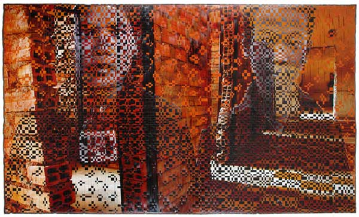
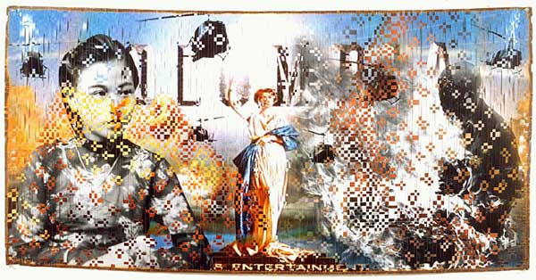
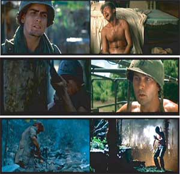

-
Dinh Q. Lê at P.P.O.W.
by Hong-An Truong February 16, 2010
The American war in Vietnam is an inexorable specter that has haunted Dinh Q. Lê’s work since he first emerged as a photographer in the nineties. At the time, he was making what are now considered his trademark works – evocative, large-scale images created by hand-weaving strips of photographs using a traditional Vietnamese grass-weaving technique he learned as a child. The most well-known of these, From Vietnam to Hollywood from 2002, was made from photojournalistic images and film stills from American movies about the war. Lê’s other works in the past decade includes mock, neo-colonial vacation posters criticizing the politics of global tourism during the conflict; and sculptural objects that allude to the brutal legacy of Agent Orange, which continues to cause birth defects throughout Vietnam.
Like most well-behaving spectres, this one wanders aimlessly, feverish with compulsive repetition. Lê’s ghost has no place to call home, and is tenuously tethered only to a global image circuit vis a vis what Andreas Huyssen has called memory cultures. Huyssen writes:
Something else must be at stake, something that produces the desire for the past in the first place and that makes us respond so favorably to the memory markets: that something, I would suggest, is a slow but palpable transformation of temporality in our lives, centrally brought on by the complex intersections of technological change, mass media, and new patterns of consumption, work, and global mobility.
Indeed, in this mediatized, technologized culture of memory, modernist linear narratives are no longer in vogue, and time is most often understood as a place, especially when it comes to histories of war and violence. (I am hearing in my mind Jello Biafra’s gritty ululations in the Dead Kennedys’ prescient “A Holiday in Cambodia” from 1980. The song not only slams white, upper-class leisure, but also ironically suggests how easy it is to ‘go native’ without ever going anywhere.) In this, our present world, the Past is not only a hotter commodity than the Future, but it’s unique brand of malaise and melancholia – based on an implicit suspicion of the future and a familiarity with instability – reigns supreme. This is the space inhabited by Lê’s ghost, now gone totally digital in this most recent exhibition of video and photography.
It is a fitting next step for an artist who has appropriated imagery to create a geography of what Lê calls surreal memory landscapes. These have always had a specific kind of attachment to the actual: the photograph’s indexicality, however disquieting, refers to real physical bodies and real sites of violence as much as it does to spirits of the dead and haunted architectures. For example, Lê’s last solo at P.P.O.W. – in May of 2008 – featured his latest work utilizing his photo-weaving technique, a series called The Hill of Poisonous Trees (a translation of the Khmer “Tuol Sleng”). Here Lê once again returned to Cambodia (he created another series of photo-weaved images photographed in Cambodia in 1998 called Splendour and Darkness), this time using photographs of the Tuol Sleng Genocide Museum. The museum was formerly Prison 21 (S-21), where at least 200,000 Cambodians were executed during the reign of the Khmer Rouge between 1975-1979. Led by Pol Pot, a French-university trained communist revolutionary, the Khmer Rouge’s rise to power was aided by Nixon’s four-year carpet bombing campaign, a strategic failure intended to bring the conflict to a quick end. In Lê’s images, the raw prison interiors in luminescent golds and reds are spliced together with stark black and white frontal portraits of the accused. In these photographs, one or two faces gaze out from in between the shimmering cracks in the walls, appearing to dissipate into splintered fragments just as they seem to coalesce. In a single glance, bodies and light and walls fuse into one another while disintegrating, a constellation that simultaneously signals order and disorder, obscuration and revelation. From a distance, the images look like fragile, time-worn images, its photo emulsion cracking apart in pieces, falling away. Close-up, the images are all pattern and rhythm and synthesis.
The impact of Lê’s meticulous weaving technique relies on the analog:in the texture and tactility of the photographic papers – not intended for this kind of intense physical manipulation – and the literal piecing together of the imagery two things take place. First, the image takes on a sculptural quality that insists on its presence as an object in space. Second, this presence materializes composite memory, makes death and memory co-habitate, and makes of the photographic object a kind of mnemotechnic. Facilitating anamnesis (literally, the loss of forgetfulness), the photographs perform Socratic work, manifesting the knowledge already inside of us. Lê’s weaved images can be understood as working through the intertextual dimension of memory, making visible its technology. Like composite video, the images take signals – one could say, like luminance and synchronization – and between them, carry information. The images maintain a kind of untenable tension: they are, phantasmagorically, analog pixelations.

The compositeness of these photo-weaved images is only fully revealed, perhaps, in light of Lê’s newer, fully digital work currently on exhibition at P.P.O.W. The show, entitled Elegies, includes two video installations and several large-scale photographs taken from one of the videos, entitled South China Sea Pishkin. The video is Lê’s first animation, and it turns on the liberation of Saigon on April 30, 1975, which precipitated the infamous and chaotic evacuation of the remaining U.S. presence by helicopter. Hundreds of helicopters fled in panic out to the South China Sea in hopes of landing on U.S. Navy aircraft carriers. An unknown number of them crashed, or were pushed off over-burdened carriers into the sea. The helicopter, that ubiquitous wartime machine with its ominous trademark sound became practically synonymous with Vietnam because of its wide use – and widespread failure – during the conflict. Between 1962 and 1973 alone, almost five-thousand U.S. helicopters fatally crashed, with fully half of these due to mechanical failures.
In Lê’s meticulously clean, hyper-real animation, rough waters lie in wait to claim metal wreckage as helicopter after helicopter falls into the sea. The helicopters are without pilots; some hover, struggling desperately to maintain above the waters before finally giving in; some seem like lifeless masses thrown violently from a merciless sky, while still others dive into the waters with a suicidal mania. In a spectacular, never ending display, the U.S. war machine, once symbolizing American might and technical prowess, fails over and over and over again.
The other video in the exhibition, called From Father to Son: A Rite of Passage, is a two-channel video that re-edits scenes from two iconic Hollywood films about Vietnam, Coppola’s Apocalypse Now from 1979 and Oliver Stone’s Platoon from 1986. The video sets in parallel scenes of Martin Sheen in Apocalypse with scenes of Sheen’s real life son, Charlie, in Platoon. In Lê’s narrative re-working, the two soldiers experience ‘the horror’ of war simultaneously, as if present in the same drama: son witnesses father having a post-traumatic breakdown; son, in turn, has a freak out all his own. Both father and son, portraying young American soliders, must kill an older American solider gone bad. It is a mirroring of the particularly American brand of the patriarchal cycle of violence (what Viet Nguyen has called – writing about Lê’s work – “Americas great cinema industrial complex.”). It suggests not simply that violence is learned through our fathers, but also, in a Freudian turn, that we must kill our fathers in the process of learning. It’s an Oedipal moment too, positing that the mother nation / mother Capitalism has cast a spell on us all. Even further, the two scenes do the tricky work of redemption; each attempting to restore the fallen American heroism as the bad, evil or misguided masculinity is purged, literally, through a performance of a less tainted, ‘good’ violence.
The power of this work lies in Lê’s use of the digitized image – a move that transforms the quandary of composite memory into a one of saturated memory. In South China Sea Pushkin, the more than life-like rendering of the sea and helicopter, once symbols brimming with meaning, are almost too full. In From Father to Son, the cinematic text is overlain with a personal one, an endless mirroring across historical, cultural, and personal memory. In both cases each textual understanding of the image is stored with the knowledge of the one before (each progressive video scan subsuming the next), unfolding a mnemonic space within each. It is the memory spaces between the texts that Lê is now interrogating. Like the wreckage of helicopter machinery heaped on the ocean floor, growing like Benjamin’s pile of debris towards the sky, the accumulating cultural data – about war, about the human capacity for violence – is a kind of speculative potential. Lê’s tapestry of memory, once fragile, is now a binary algorithm, powerfully and infinitely transformable. The ghosts of wars past still haunt Lê’s work – only now, they are likely to go viral.

{kind=link}
{kind=link}
{kind=link}
1 Comment
TPG | From Father to Son – A Rite of Passage – Dinh Q. Le
[...] Excerpt written by Hong-An Tran from Idiom Magazine. [...]